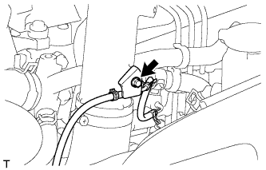

КОРПУС ДРОССЕЛЬНОЙ ЗАСЛОНКИ ДИЗЕЛЬНОГО ДВИГАТЕЛЯ (для моделей без DPF) > СНЯТИЕ |
| 1. ОТСОЕДИНИТЕ ВХОДНОЙ ПАТРУБОК ОТОПИТЕЛЯ |
 |
Выверните болт и отсоедините входной патрубок отопителя.
| 2. ОТСОЕДИНИТЕ ВАКУУМНУЮ ТРУБКУ № 4 В СБОРЕ |
|  |
Выверните болт и отсоедините вакуумную трубку № 4.
| 3. СНИМИТЕ ВПУСКНОЙ ПАТРУБОК № 1 |
 |
Отсоедините 3 разъема от датчика температуры воздуха на впуске, электродвигателя привода дроссельной заслонки и датчика абсолютного давления в коллекторе.
Снимите 2 зажима.
Отсоедините вакуумный шланг от датчика абсолютного давления в коллекторе.
 |
Ослабьте 2 зажима шланга и снимите воздушный шланг № 1.
 |
Ослабьте зажим воздушного шланга промежуточного охладителя.
 |
Выверните 2 болта и снимите впускной патрубок № 1.
| 4. СНИМИТЕ КОРПУС ДРОССЕЛЬНОЙ ЗАСЛОНКИ ДИЗЕЛЬНОГО ДВИГАТЕЛЯ В СБОРЕ |
 |
Отсоедините разъем датчика положения дроссельной заслонки.
 |
Выверните 2 болта, отверните 2 гайки и снимите корпус дроссельной заслонки дизельного двигателя с прокладкой.